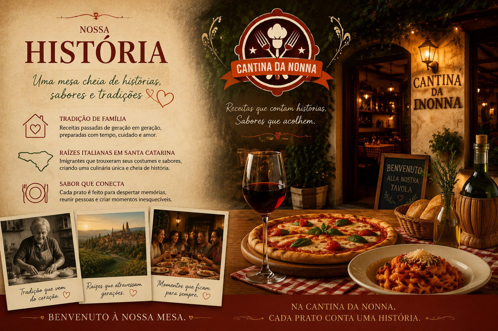

Tradição italiana em família
Nossa História
Uma mesa cheia de histórias, sabores e tradições.
Algumas receitas alimentam o corpo. Outras despertam memórias.

A Cantina da Nonna nasceu inspirada nas antigas cozinhas italianas, onde cada prato era preparado com tempo, cuidado e um ingrediente especial: o amor pela família.
Nossa história é uma homenagem às nonnas italianas que transformaram ingredientes simples em momentos inesquecíveis. Receitas passadas de geração em geração, reunindo pessoas ao redor da mesa e criando lembranças que permanecem para sempre.
A alma italiana em Santa Catarina
A tradição italiana também faz parte da história de Santa Catarina. A partir do século XIX, imigrantes vindos principalmente do norte da Itália trouxeram seus costumes, suas receitas e a paixão pela boa comida.
Em novas terras, essas famílias mantiveram suas raízes e adaptaram sua culinária aos ingredientes locais, criando uma identidade única: uma cozinha marcada pelas massas artesanais, molhos preparados lentamente, pães, queijos, vinhos e sabores que representam união e acolhimento.
Essa mistura entre a tradição italiana e a cultura catarinense deu origem a uma gastronomia rica em história e afeto.
O sabor da tradição em cada prato
Na Cantina da Nonna, cada receita é preparada para proporcionar uma experiência completa.
As massas representam o cuidado artesanal das famílias italianas. As pizzas carregam a tradição de Nápoles e o prazer de compartilhar bons momentos. As entradas despertam o desejo de conversar e celebrar. As sobremesas preservam a delicadeza da confeitaria italiana.
Mais do que uma refeição, queremos proporcionar uma viagem de sabores, aromas e lembranças.
Porque na Cantina da Nonna, cada prato conta uma história.
Benvenuto à nossa mesa.